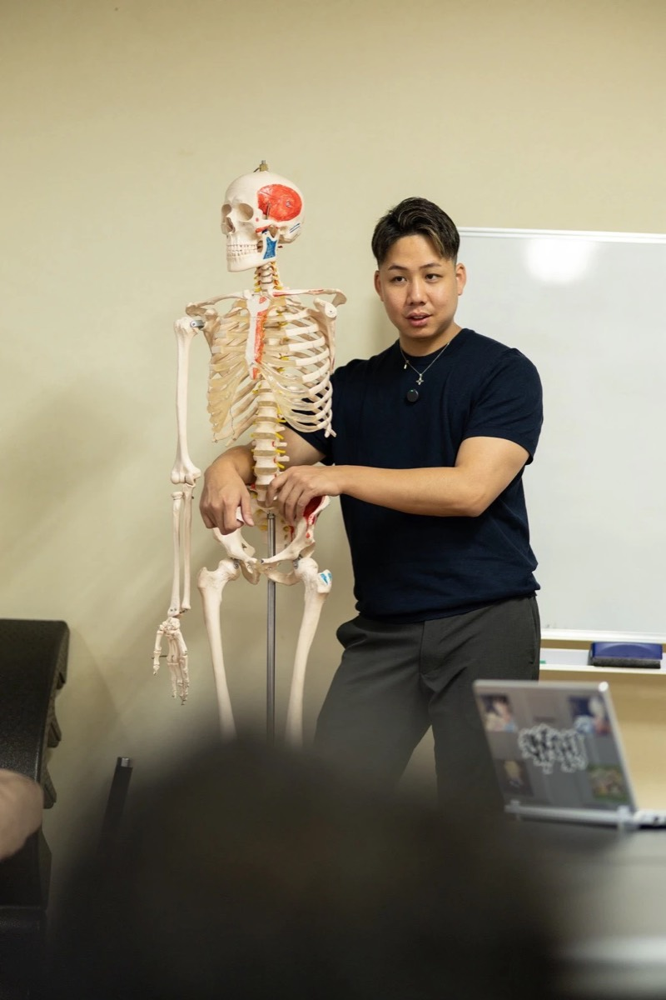
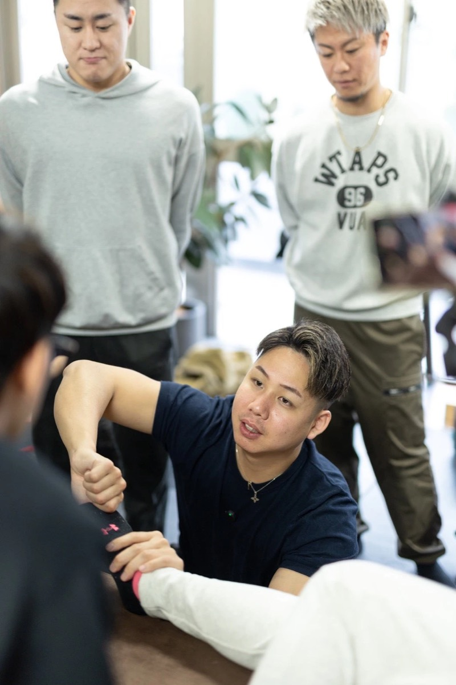

応用｜4月開催
零式-解剖×評価×施術でつくる美姿勢
姿勢を、見た目ではなく解剖と評価から読み解く。
解剖・評価・施術を一つの流れでつなげ、姿勢を整えるための考え方と技術を学びます。
- 日程
- 2027年4月17日（土）
- 会場
- 東京（詳細は受付開始時にご案内）
- 形式
- 対面（実技あり）
- 対象
- トレーナー・セラピストなど、身体に関わる専門職の方
- 受講条件
- なし
- 受付状況
- 受付前（2027年1月受付開始予定）

FOR YOU
こんな方におすすめ
- 姿勢改善を求めるお客様に、根拠を持って説明・提案したい方
- 評価から施術までを一貫した流れで組み立てたい方
対象：トレーナー・セラピストなど、身体に関わる専門職の方
受講条件：なし
WHAT YOU LEARN
このセミナーで学ぶこと
- 解剖の知識をもとにした姿勢の評価
- 評価結果から施術を選ぶ考え方
ほかの講座との違い
入門講座で育てた「手」と「足元の視点」を、姿勢全体の評価と施術へ広げる講座です。
CURRICULUM
カリキュラム
講義と実技の順序・時間割は、受付開始時にこのページでご案内します。
ATMOSPHERE
講習の雰囲気
講師の実演を間近で見ながら、考え方と手技を学びます。


※写真は過去の零式セミナーの様子です。

INSTRUCTOR
原口 慶篤
TOTAL BODY FITNESS THEORY 代表 ／ 零式 founder
パーソナルトレーナー・整体師（歴12年）
民間資格：NASM-PES、NSCA-CPT。人体解剖実習（5回）、オステオパシー（スラスト BASIC・ADVANCE、内臓調整）を受講。目の前の一人をよく見て、必要なことを、必要な分だけ行う姿勢を、技術と一緒に伝えています。
講師の詳しいプロフィールOUTLINE
開催概要
| 日程 | 2027年4月17日（土） |
|---|---|
| 会場・アクセス | 東京（詳細は受付開始時にご案内します） |
| 形式 | 対面（実技あり） |
| 受講条件 | なし |
| キャンセル条件 | お申し込み前に規約でご案内します |
| 受付状況 | 受付前（2027年1月受付開始予定） |
2027年1月の受付開始時にご案内する内容
受講料・定員・開始と終了の時刻・持ち物・申込期限・支払い方法は、受付開始時にこのページでご案内します。
FAQ
よくある質問
実技はありますか？
はい。対面で実技を行います。
零式-解剖×評価×施術でつくる美姿勢
対象：トレーナー・セラピストなど、身体に関わる専門職の方／受講条件：なし
この講座は受付前（2027年1月受付開始予定）です。受付開始のご案内を公式LINEでお届けします。